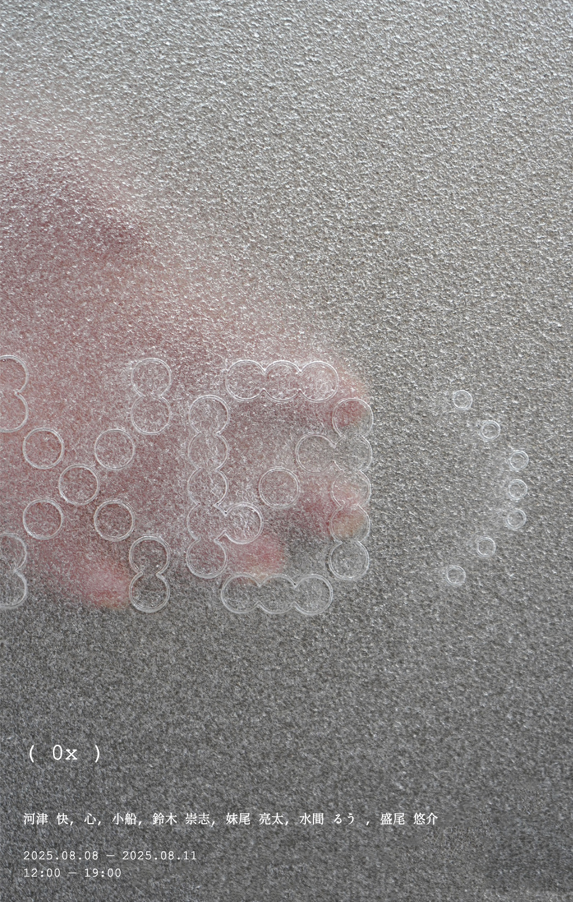
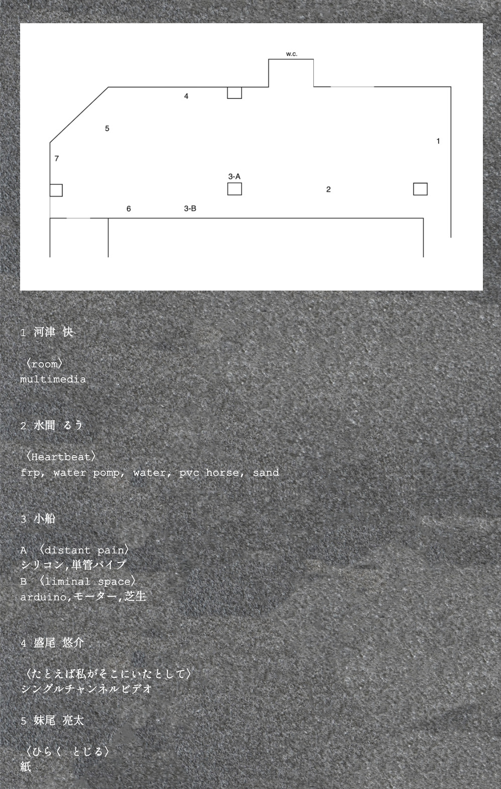

[ 0x ] flyer・website
Medium flyer
year August2025
software photoshop / Illustrator
本フライヤー. webサイトは、自身が参加する展示会［0x］のために、「0x」という概念を視覚化することを目的として制作した。
情報を明確に伝える媒体としてのフライヤーではなく、展示のコンセプトを物質として先に体験させる存在として位置づけている。
素材にはすりガラスを用い、レーザーカッターによる刻印を施した。
すりガラスは視界を遮りながらも完全には隠さず、向こう側の気配や輪郭だけを残す。
このフライヤーは、情報が確定する手前の状態、解釈が立ち上がる直前の状態を保ったままの存在を意図している。
展示タイトル「0x」が持つ未確定性や空白性と呼応するかたちで、
フライヤー自体もまた、明確な答えや意味を提示しないメディアとして設計した。

[ 0x ] flyer



[ 0x ] website